측량및지형공간정보기사 (2012-05-20 기출문제)
1과목: 측지학 및 위성측위시스템
1. GPS 신호의 품질에 대한 설명으로 틀린 것은?
- 건물이나 지형지물에 의해 반사된 신호는 품질이 좋지 않다.
- 대기층에 수증기 양이 많을수록 품질이 좋지 않다.
- 전리층의 전자수가 많을수록 품질이 좋지 않다.
- 위성의 고도가 높을수록 품질이 좋지 않다.
(정답률: 82%)

2. 일반적으로 GPS의 구성요소를 3가지로 구분할 때, 이에 속하지 않는 것은?
- 우주 부문
- 사용자 부문
- 제어(관제) 부문
- 장비 부문
(정답률: 81%)
3. GPS 방송궤도력에서 제공하는 정보로 옳은 것은?
- 위성과 수신기 사이의 거리
- 위성의 위치정보
- 대기 중 습도정보
- 수신기의 시계오차
(정답률: 67%)
4. 동일 자오선 상에 있는 A점과 B점에서 천의 북극의 고도가 각각 α= 30°, β= 27°로 측정되었을 때 AB간의 거리가 333㎞라 하면 지구 반지름은?
- 약 6330㎞
- 약 6340㎞
- 약 6360㎞
- 약 6370㎞
(정답률: 55%)
5. 표고 326.42m의 평탄지에서 거리 500m를 평균 해면상의 값으로 보정하려고 할 때 보정량은? (단, 지구반경은 6370㎞로 한다.)
- -5.12㎝
- -2.56㎝
- 1.28㎝
- 3.28㎝
(정답률: 74%)
6. 우리나라에서 편각이 +30°인 어느 지점의 자침이 그림과 같을 때 진북방향을 가리키는 것은?
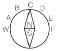
- A
- B
- C
- D
(정답률: 80%)
7. GPS의 군사용 신호를 이용할 수 없도록 제한하는 제도적 장치는?
- Anti-Spoofing
- Delta Process
- Epsilon Process
- Selective Availability
(정답률: 89%)
8. 어떤 지점에서 GPS 측량을 실시한 결과 타원체 고가 187.6m, 정표고가 53.7m이었다면 이 지점의 지오이드고는?
- 241.3m
- 133.9m
- 120.7m
- -133.9m
(정답률: 88%)
9. 지구조석에 대한 설명으로 틀린 것은?
- 지구조석의 해석으로도 지구내부구조를 어느 정도 알 수 있다.
- 지구는 완전강체이므로 기조력에 의한 탄성변화는 없는 것으로 가정한다.
- 천체의 인력 때문에 해면의 주기적인 승강을 조석이라 한다.
- 달과 지구의 거리가 가까울수록 조차가 크다.
(정답률: 77%)
10. 경위도 좌표계에서 평균곡률반경을 구하는 식으로 옳은 것은? (단, M: 자오선곡률반경, N: 평행권곡률반경)
- √MN
- MN
- M/N
- (M+N)/2
(정답률: 74%)
11. 현재 운용중인 GPS에서 사용할 수 있는 수신 자료가 아닌 것은?
- C/A
- L1
- L2
- E5
(정답률: 85%)
12. 지자기에 대한 설명으로 틀린 것은?
- 지자기 측정은 측정지점의 자오선의 곡률 반지름을 계산해야 한다.
- 지자기는 그 방향과 크기를 구함으로써 정해진다.
- 지자기의 3요소는 편각, 복각, 수평분력이다.
- 지자기의 방향과 자오선의 각을 편각, 수평면과의 각을 복각이라 한다.
(정답률: 60%)
13. 태양의 적도를 남에서 북으로 가로지르며 갈때의 황도와 적도의 교점은?
- 지점(solstice)
- 춘분점(vernal equinox)
- 추분점(autumnal equinox)
- 남점(south point)
(정답률: 68%)
14. GPS 측위의 계통적 오차(정오차) 요인이 아닌 것은?
- 위성의 시계오차
- 위성의 궤도오차
- 전리층 지연오차
- 관측 잡음오차
(정답률: 80%)
15. 중력의 영년변화(secular variation, 경년변화) 원인이 아닌 것은?
- 지상물질의 분포
- 만유인력상수의 변동
- 지구의 형상과 질량의 변화
- 지구 전체적인 질량분포의 일반적인 변동
(정답률: 63%)
16. 기준점측량과 같이 매우 높은 정밀도를 필요로할 때 사용하는 방법으로서 두 개 또는 그 이상의 수신기를 사용하여 보통 시간 이상 관측하는 GPS 현장 관측방법은 무엇인가?
- 정지측량(static 관측방법)
- 이동측량(kinematic 관측방법)
- 신속정지측량(rapid static 관측방법)
- RTK(Real Time Kinematic)
(정답률: 85%)
17. 다음의 설명이 옳지 않은 것은?
- 평균해면에 의한 등퍼텐셜면(지오이드)으로 부터 연직거리를 정표고라고 한다.
- 정표고는 수준측량에서 구한 높이에서 보정을해야하며, 이 보정을 오소매트릭(orthometric) 보정이라고 한다.
- 어떤 점의 역표고는 그 점과 지오이드사이의 포텐셜 차이를 표준위도에서의 중력값으로 나눈 것이다.
- 지구중력의 크기는 적도지방이 크고 극지방이 작다.
(정답률: 85%)
18. 천문 좌표계에 해당하지 않는 것은?
- 지평좌표
- 적도좌표
- 횡도좌표
- 극 좌표
(정답률: 70%)
19. 우리나라 지도제작을 위해 사용하는 횡축메르카토르(TM)도입에서 채택하고 있는 중앙자오선에서의 축척계수는 얼마인가?
- 0.9996
- 0.9999
- 1.0000
- 1.00⑤
(정답률: 82%)
20. 세계 각 국에서는 보다 정확하고 시공을 초월한 측위환경에 대한 수요가 증가함에 따라 각국 고유의 측위위성시스템(GNSS:global navigation satellite system)을 개발하고 구축하고 있다. 이와 관련이 없는 것은?
- Galileo
- QZSS
- SPOT
- GLONASS
(정답률: 67%)
2과목: 응용측량
21. 하천측량에서 평면측량의 범위 및 거리에 대한 설명으로 옳지 않은 것은?
- 유제부에서의 측량범위는 제외지 전부와 제내지 300m 이내로 한다.
- 무제부에서의 측량범위는 홍수가 영향을 주는 구역보다 하천중심방향으로 약간 안쪽으로 측량한다.
- 홍수 방지 공사가 목적인 하천 공사에서는 하구에서부터 상류의 홍수 피해가 미치는 지점까지로 한다.
- 선박 운행을 위한 하천 개수가 목적일 때 하류는 하구까지로 한다.
(정답률: 65%)
22. 토량계산 공식 중 양단면의 면적차가 심할 때 산출된 토량의 일반적인 대소 관계로 옳은 것은?(단,A=중앙단면법, B=양단평균법, C= 각주공식)
- A = C ＜ B
- A ＜ C = B
- A ＜ C ＜ B
- A > C ＞ B
(정답률: 59%)
23. 하천측량에서 저수위란 1년을 통하여 몇일간이보다 내려가지 않는 수위를 의미하는가?
- 95일
- 135일
- 185일
- 275일
(정답률: 72%)
24. 그림과 같이 원곡선으로 종단곡선을 설치할때, i1=0%, i2=0%, A=NO.25+8.5m, C=NO.26+8.5m, B=NO.27+8.5m이라고하면 NO.27에서의 종거 y3의 값은? (단, 측정간 거리는 20m로 한다.)
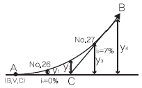
- 0.116m
- 0.35m
- 0.868m
- 1.40m
(정답률: 59%)
25. 보기의 빈칸에 적합한 용어에 알맞게 짝지어진 것은?
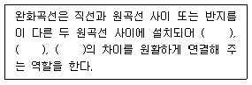
- 확폭량, 편경사, 종단경사
- 곡선반지름, 확폭량, 편경사
- 곡선반지름, 편경사, 종단경사
- 종단경사, 편경사, 편기각
(정답률: 64%)
26. 3차포물선 형상의 완화곡선에서 교각 I=90°, 원곡선의 곡선반지름 R=500m, 완화곡선의 횡거 X=160m일 경우 완화곡선 종점에서의 접선각은?
- 9°5′25″
- 16°48′⑤″
- 20°48′⑤″
- 21°48′⑤″
(정답률: 54%)
27. 단곡선 설치 방법 중 접선과 현이 이루는 각을 이용하여 곡선을 설치하는 방법으로 정확도가 높아 많이 이용되는 것은?
- 지거법
- 편각법
- 중앙종거법
- 종거에 의한 설치법
(정답률: 65%)
28. 음향측심기를 사용하여 수심측량을 실시한 결과, 송신음파와 수신음파의 도달시간차가 4초이고 수중음속이 1000m/sec라 하면 수심은?
- 1000m
- 2000m
- 3000m
- 4000m
(정답률: 67%)
29. 터널측량에 관한 설명으로 옳은 것은?
- 터널측량을 크게 나누어 터널 외 측량, 터널내 측량, 터널 내외 연결측량으로 구분한다.
- 터널 내에서 중심말뚝을 콘크리트 등을 이용하여 견고하게 만든 것을 자이로(gyro)라고 한다.
- 터널측량의 일반적인 순서는 터널 내 측량, 터널 내외 연결측량, 터널 외 측량의 순서를 행한다.
- 터널 내의 측량에는 기계의 십자선과 표척등에 조명이 필요하지 않다.
(정답률: 67%)
30. 유량조사를 목적으로 하는 수위관측소의 설치장소 선정에 있어서 고려해야 할 조건으로 옳지 않은 것은?
- 홍수 때에 관측소의 유실, 이동의 염려가 없을 것
- 하상이 안정하고 세굴이나 퇴적이 생기지 않을 것
- 교각 등의 영향에 의한 불규칙한 수위변화가 없을 것
- 하도의 만곡부로 수면 폭이 좁을 것
(정답률: 76%)
31. 터널내의 주점의 좌표가 A(-66.20m, -71.20m), B,(1⑤.50m, 129.30m)이고 높이가 각각 29.70m, 111.30m인 A, B점을 연결하는 터널을 굴진하는 경우 이 터널의 사거리는?
- 213.192m
- 223.976m
- 263.972m
- 276.296m
(정답률: 35%)
32. 터널 내외 연결측량에 관한 설명으로 옳지 않은 것은?
- 1개의 수직 터널에 의한 연결측량방법은 정렬법과 삼각법이 있다.
- 선단에 추를 달아 수직선을 내리고 추의 흔들림을 막기 위해 물 또는 기름통에 넣어 진동을 방지한다.
- 얕은 수직 터널에서는 보통 철선, 강선, 황동선이 이용되며 깊은 수직 터널에서는 피아노선이 이용된다.
- 수직터널이 한 개인 경우 수직 터널에 한 개의 수선을 내리고 이 수선의 길이와 방위를 관측한다.
(정답률: 67%)
33. 교량의 경관 계획의 고려사항으로 거리가 먼 것은?
- 교량의 설치 위치, 형식, 규모
- 교량을 조망하는 시점 및 시점장
- 교량의 유지관리 체계
- 교량과 지형, 주변시설과의 조화
(정답률: 54%)
34. 양단면 평균법에 따라 체적을 구하고자 한다. 두 단면 A1=25m2, A2=40m2와 구간거리 ℓ=20m±0.2m를 측정했을 때, 체적오차는? (단, 면적의 오차는 무시함)
- ±4.0m3
- ±6.5m3
- ±9.8m3
- ±12.0m3
(정답률: 41%)
35. 유토곡선의 특성에 대한 설명으로 옳지 않은 것은?
- 곡선이 하향인 구간은 절토구간이고, 상향인 구간은 성토구간이다.
- 곡선의 지점은 성토에서 절토로, 정점은 절토에서 성토로 바뀌는 점이다.
- 평행선(기선)에서 곡선의 저점이나 정점까지의 종거는 절토에서 성토로 운반되는 절토량을 의미한다.
- 유토곡선과 평행성(기선)과 교차점은 성토점과 절토량이 거의 같은 평행상태를 나타낸다.
(정답률: 53%)
36. 지하에 설치된 상·하수도시설, 가스시설, 통신시설 등의 건설 및 유지관리를 위한 자료제공의 역할을 하는 측량은?
- 초구장측량
- 관계배수측량
- 건축측량
- 지하시설물측량
(정답률: 90%)
37. 설계속도 100㎞/h의 도로건설에 있어서 직선부와 원곡선부 사이에 완화곡선 설치여부를 이정량의 크기에 의해 판단하고자 한다. 이정량이 0.2m 이하일 때 완화곡선을 생략할 수 있다면 원곡선의 최소 반지름은? (단, 완화곡선은 클로소이드 곡선으로 설치하고, 완화곡선 길이는 설계속도로 2초간 주행하는 거리로 가정한다.)
- 315m
- 417m
- 643m
- 920m
(정답률: 39%)
38. 교점(I.P.)의 위치가 공사기점으로부터 325.00m 곡선반지름(R) 200m, 교각(I) 45°인 단곡선을 편각법으로 설계할 때 시단현의 편각은?
- 2°33′21″
- 1°56′11″
- 1°22′38″
- 0°37′5″
(정답률: 64%)
39. 수심H인 하천의 수면으로부터 0.2H, 0.4H, 0.6H, 0.8H 깊이에서 관측한 유속이 각각 3m/s, 5m/s, 4m/s, 2m/s이었다면 3점법에 의한 평균유속은?
- 2.43m/s
- 3.25m/s
- 3.52m/s
- 4.13m/s
(정답률: 50%)
40. 축척 1:5000 도상에서의 면적이 40.52cm2이었다면 실제면적은?
- 0.01km2
- 0.1km2
- 1.0km2
- 10.0km2
(정답률: 70%)
3과목: 사진측량 및 원격탐사
41. 입체상의 과고감에 대한 설명으로 옳지 않은 것은?
- 촬영기선이 짧은 경우가 긴 경우보다 더 커진다.
- 렌즈의 초점거리가 긴 쪽의 사진이 짧은 쪽의 사진보다 더 작아진다.
- 같은 조건에서 낮은 촬영고도로 촬영한 사진이 높은 촬영고도보다 더 커진다.
- 눈의 위치가 약간 높아짐에 따라 입체상은 더 커진다.
(정답률: 65%)
42. 원격탐사의 정보처리흐름으로 옳은 것은?
- 자료수집 - 자료변환 - 방사보정 - 기하보정 - 판독응용 - 자료보관
- 자료수집 - 방사보정 - 기하보정 - 자료변환 - 판독응용 - 자료보관
- 자료수집 - 자료변환 - 판독응용 - 기하보정 - 방사보정 - 자료보관
- 자료수집 - 방사보정 - 자료변환 - 기하보정 - 판독응용 - 자료보관
(정답률: 72%)
43. 편위수정 조건이 아닌 것은?
- 샤임 플러그 조건
- 광학적 조건
- 로세다 조건
- 기하학적 조건
(정답률: 71%)
44. 다음과 같은 3×3 크기의 영상자료에 Sobel edge 추출 연산자를 적용하면 중앙 위치에 할당될 값은?
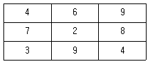
- 8
- 9
- 10
- 11
(정답률: 50%)
45. 항공삼각측량에서 해석적 방법에 속하지 않는 것은?
- 광학법
- 독립모형법
- 다항식법
- 광속조정법
(정답률: 52%)
46. 초점거리 15㎝, 사진크기 23㎝×23㎝인 카메라로 표고점의 높이 오차가 등고선 간격의 1/3이 되도록 하기 위한 촬영고도는? (단, 종중복도(overlap) 60%, 등고선 간격 2m, 시차측정오차는 ±40㎛으로 한다.)
- 약 1350m
- 약 1430m
- 약 1530m
- 약 1610m
(정답률: 54%)
47. 약 120°의 피사각을 가진 초광각 렌즈와 렌즈앞에 장치한 프리즘이 회전하여 비행방향에 직각방향으로 넓은 피사각을 활영할 수 있는 판독용 사진기는?
- 프레임 사진기
- 파노라마 사진기
- 스트립 사진기
- 다중렌즈 사진기
(정답률: 77%)
48. 수치항공영상을 이용한 상호표정시 입체영상에서 공액점을 자동으로 측정하기 위해 사용되는 기법은?
- 영상 모자이크
- 영상정합
- 보간법
- 편위수정
(정답률: 58%)
49. 절대표정에 대한 설명으로 옳지 않은 것은?
- 현 입체모델에서 수평위치 기준 2점, 수직위치 기준점 3점이면 절대표정이 가능하다.
- 지상기준점이 없는 경우는 접합점(tie point)과 공면조건식으로 절대표정을 수행한다.
- 상호표정으로 생성된 3차원 모델과 지상좌표계와의 기하학적 관계를 수립한다.
- 절대표정으로 수행하면 접합점(tie point)에 대한 지상점좌표를 계산할 수 있다.
(정답률: 50%)
50. 해석적 내부표정에 대한 설명으로 옳은 것은?
- 양화필름의 지표를 투영기 건판지지기의 지표에 일치시키는 작업이다.
- 정밀좌표관측기에 의해 관측된 상좌표를 사진좌표로 변환하는 작업이다.
- 공면조건식을 활용하여 양쪽 사진의 종시차를 소거하는 작업이다.
- 사진의 위치와 경사를 공간후방교선법으로 결정하는 작업이다.
(정답률: 38%)
51. 지상이나 항공기 및 인공위성 등의 탑재기(platfrom)에 설치된 감지기(sensor)를 이용하여 지표, 지상, 지하, 기권 및 우주공간의 대상물에서 반사 혹은 방사되는 전자기파를 탐지기파로 탐지하고 이들 자료로부터 토지, 환경 및 자원에 대한 정보를 얻어 이를 해석하는 기법은?
- GPS
- DTM
- 원격탐사
- 토탈스테이션
(정답률: 79%)
52. 전자기파의 파장대를 파장이 짧은 것부터 순서대로 나열한 것은?
- 청색 → 녹색 → 적색 → 자외선
- 적색 → 녹색 → 청색 → 자회선
- 자외선 → 청색 → 녹색 → 적색
- 자외선 → 적색 → 녹색 → 청색
(정답률: 62%)
53. 항공사진촬영에서 광범위한 지역의 촬영시 비행방향으로 옳은 것은?
- 남북방향
- 북서방향
- 동서방향
- 동남방향
(정답률: 73%)
54. 사진측량의 특징에 대한 설명으로 옳지 않은 것은?
- 피사체에 대한 식별이 어려우므로 현장작업으로서 보완할 필요도 있다.
- 움직이는 대상물의 상태를 분석할 수 있으며 낙하하는 돌의 추적같은 4차원 측정도 가능하다.
- 정량적, 정성적인 측정을 할 수 있으므로 환경 및 자원조사, 기상조사, 도서의 발전상황들도 판단할 수 있다.
- 사진측량은 작업이 간편하고 신속하여 촬영만으로 대상물체의 특성 및 정량적인 분석을 정밀하게 할 수 있다.
(정답률: 55%)
55. 사진측량으로 도심지역의 수치지도를 작성할 경우 사진이 해상도를 일정하게 유지시키면서 고층건물에 의해 발생하는 폐색지역(occlusion area)을 감소시킬 수 있는 방법은?
- 촬영고도를 높게 한다.
- 촬영고도를 낮게 한다.
- 동일한 촬영고도에서 사진의 중복도를 크게한다.
- 동일한 촬영고도에서 사진의 중복도를 작게한다.
(정답률: 82%)
56. 사진의 크기 23㎝×23㎝인 사진기로 촬영고도 3000m에서 활영하여 사진의 유효면적 21.16km2를 얻었다면 이 사진기의 초점거리는?
- 15㎝
- 21㎝
- 25㎝
- 30㎝
(정답률: 37%)
57. 인공위성에서 촬영된 다중분광센서(MSS)영상의 활용으로 가장 적합한 것은?
- 입체 시각화에 의한 지형분석
- 영상분류에 의한 토지이용 분석
- 대축척 수치지도 제작
- 야간이나 악천후 중 재해 모니터링
(정답률: 73%)
58. 위성영상의 영상분류(image classification)에 대한 설명으로 옳은 것은?
- 위성영상의 질(quality)을 표준화하여 등급을 정하는 것이다.
- 영상향상(image enhancement)을 위한 전처리과정에 적용된다.
- 다양한 위성영상들을 좌표계에 맞추어 구역 별로 나누는 것이다.
- 무감독 분류에서는 사전학습자료(trainingdata)를 이용하지 않는다.
(정답률: 68%)
59. 항공사진측량을 위한 촬영계획에서 종중복도를 증가시킬 때 일어나는 현상으로 옳지 않는 것은?
- 주점기선길이가 줄어든다.
- 사진매수가 늘어난다.
- 사각부가 줄어든다.
- 과고감이 증가한다.
(정답률: 58%)
60. 주점과 등각점의 거리가 6.55㎜이고, 경사각이 5°축척이 1:20000일 경우에 촬영고도는?
- 약 2000m
- 약 3000m
- 약 4000m
- 약 5000m
(정답률: 50%)
4과목: 지리정보시스템
61. GIS의 특징에 대한 설명으로 가장 옳지 않은 것은?
- 지리정보처리는 자료의 입력, 자료의 관리, 자료의 분석, 자료의 출력 등의 단계로 구분할 수 있다.
- 사용자의 요구에 맞는 지도를 쉽게 제작할수 있다.
- 자료의 통계적 분석이 가능하며 분석결과에 맞는 지도의 제작이 가능하다.
- 일반적으로 자료가 수치적으로 구성되므로 출력물의 축척 변경이 어렵다.
(정답률: 77%)
62. 메타데이터에 대한 설명 중 옳지 않은 것은?
- 공간자료 호환 표준 포맷을 의미한다.
- 데이터에 대한 특성과 내용을 설명한다.
- 데이터의 검색을 위한 참조자료로 이용된다.
- GIS자료의 원활한 공급과 활용을 위해 필요하다.
(정답률: 63%)
63. DBMS는 지리정보를 효율적으로 관리하기 위한 도구이다. DBMS의 장점이라고 하기 어려운 것은?
- 중앙제어기능
- 효율적인 자료호환
- 다양한 양식의 자료제공
- 시스템의 단순성
(정답률: 46%)
64. 수치지형도에서 얻을 수 없는 정보는?
- 표고자료
- 도로의 선형
- 수계정보
- 필지정보
(정답률: 60%)
65. 공간데이터의 위상모델(Topology)을 통해 가능한 공간분석이 아닌 것은?
- 중첩분석(overlay analysis)
- 경사분석(slope analysis)
- 인접성분석(contiguity analysis)
- 연결성분석(connectivity analysis)
(정답률: 78%)
66. 다음이 공통적으로 설명하는 단어는?
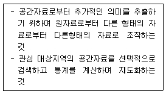
- 공간분석
- 네트워크 분석
- 위상분석
- 통계분석
(정답률: 71%)
67. SQL은 DBMS에 저장된 지리자료에 대한 표준질의어이다. 지적도(parcels)에서 면적(area)이 100m2를 초과하는 대지의 소유자(owner)를 알려고 할 때, SQL 질의문으로 옳은 것은?
- SELECT owner FROM area 100m2 WHERE parcels
- SELECT area GT 100m2 FROM owner WHERE parcels
- SELECT owner FROM parcels WHERE area > 100m2
- SELECT parcels FROM owner WHERE area > 100m2
(정답률: 79%)
68. 그림은 타임스트라 알고리즘을 이용한 최단 경로 계산의 사례를 보여주고 있다. A점에서 출발하여 G지점에 도착하는 최단경로는?
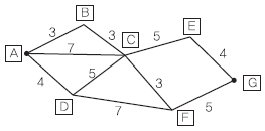
- ABCEG
- ACEG
- ACFG
- ABCFG
(정답률: 76%)
69. GIS 데이터베이스에 대한 설명으로 틀린 것은?
- 실세계의 일부를 표현한 것으로 특정한 의미를 갖는 자료의 집합을 의미한다.
- 초기 구축에 많은 비용이 소요되며 지속적인 유지, 관리가 필요하다.
- 다양한 응용프로그램에서 다양한 목적으로 편집, 저장될 수 있다.
- 같은 주제의 자료를 여러기관에서 중복 구축, 관리함으로써 품질을 향상 시킬 수있다.
(정답률: 62%)
70. 지하시설물 데이터베이스 구축 후의 효율적인 유지관리방안으로 가장 거리가 먼 것은?
- 관리쳬계가 구축된 후 변화들에 대한 신속하고 지속적인 모니터링
- 지하시설물의 DB는 항상 현재성 유지
- 사용자들의 추가적인 요구사항을 반영
- 전산체계의 갱신, 운영, 관리의 효율성 확립을 위한 시스템 재개발
(정답률: 70%)
71. 필지간의 위상관계 중 주어진 연속지적도에서 나의 대지와 접해있는 이웃대지들의 정보를 얻기 위해 사용하는 것은?
- 인접성
- 연결성
- 방향성
- 포함성
(정답률: 79%)
72. 지도제작에 있어서 사용자의 요구에 부합하도록 지도를 디자인하는 과정에서 이루어지는 것으로 적절하지 않은 것은?
- selection(취사선택)
- classification(분류)
- globalization(세계화)
- symbolization(부호화)
(정답률: 69%)
73. GIS 구축의 의의(목적)에 대한 설명으로 틀린 것은?
- 공간정보의 효율적 관리 수단
- 객관적 분석을 통한 공간의사 결정
- 공간정보 구축 및 활용 시장의 축소
- 공간정보 이용자의 범위 확대
(정답률: 93%)
74. 자료의 형태에 대한 설명으로 틀린 것은?
- 벡터자료는 고해상도의 표현이 가능하다.
- 벡터자료는 간단한 구조의 자료형식을 갖고 있어 초기 구축비용이 저렴하다.
- 래스터자료는 레이어 중첩이나 분석이 용이하다.
- 래스터자료는 데이터 용량이 크다.
(정답률: 68%)
75. 지형도, 항공사진을 이용하여 대상자의 3차원 좌표를 취득하여 불규칙한 지형의 기하학적으로 재현하고 수치적으로 해석하므로 경관해석, 노선선정, 택지조성, 환경설계 등에 이용되는 것은?
- 원격탐사
- 도시정보체계
- 정사사진
- 수치지형모델
(정답률: 66%)
76. 공간정보의 표현기법 중 레스터데이터 (Raster data)의 특징이 아닌 것은?
- 격자형의 영역에서 x,y 축을 따라 일련의 셀들이 존재한다.
- 각 셀들이 속성 값을 가지므로 이들 값에 따라 셀들을 분류하거나 다양하게 표현한다.
- 인공위성에 의한 이미지, 항공영상에 의한 이미지, 스캐닝을 통해 얻어진 이미지 데이터들이다.
- 3차원과 같은 입체적인 지도 디스플레이 표현은 불가능하다.
(정답률: 52%)
77. 표와 같은 위상구조 테이블에 적합한 데이터는?
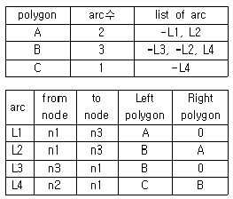
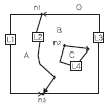
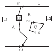
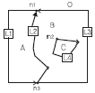
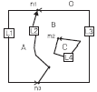
(정답률: 72%)
78. georeferencing에 관한 설명으로 옳지 않은 것은?
- georeferencing이란 영상이나 일반적인 데이터베이스정보에 좌표를 부여하는 과정이다.
- address geocoding은 georeferencing의 일부이다.
- georeferencing을 통해 데이터의 위상구조가 부여된다.
- 영상의 georeferencing에서는 주로 지상기 준점을 활용한다.
(정답률: 58%)
79. GIS의 지형분석에서 불규칙하게 분포된 위치에서의 표고를 추출하여 이들 위치관계를 삼각형 형태로 연결하여 지형을 표현하는 방식은?
- Overlay방식
- Grid방식
- TIN방식
- 보간방식
(정답률: 85%)
80. A집에 2명, B집에 1명, C집에 3명, D집에 4명 등 A, B, C, D 4개의 집에 총 10명의 사람이 살고 있다. 10명 전체가 모일 경우 사람들의 걸음을 최소로 할 수 있는 중간지점 E의 좌표는? [각 집의 위치 좌표] = A(1,1), B(4,3), C(6,5), D(2,7)
- (3.2, 4.8)
- (3.25, 4.0)
- (3.2, 4.0)
- (3.25, 4.8)
(정답률: 56%)
5과목: 측량학
81. 동일한 조건하에서 수평각을 5회 관측하여 아래와 같은 결과를 얻었다. 표준 편차(평균제곱 근오차)는?
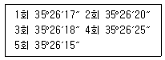
- ±2″
- ±3″
- ±4″
- ±5″
(정답률: 46%)
82.
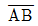
측선의 방위각이 193°30′15″일 때 측선의 역방위각은?
측선의 역방위각은?- 13°30′15″
- 103°30′15″
- 263°30′-15″
- 346°29′45″
(정답률: 48%)
83. 수준측량의 오차 중 기계의 구조 및 불완전한 조정으로 생기는 오차가 아닌 것은?
- 망원경의 시준선과 기포관 축이 나란하지 않기 때문에 생기는 오차
- 시준하는 순간 기포가 중앙에 있지 않지 때문에 생기는 오차
- 수준척의 길이가 정확하지 않기 때문에 생기는 오차
- 수준척의 눈금이 정확하지 않기 때문에 생기는 오차
(정답률: 54%)
84. 측량오차의 종류 중 수학적 또는 물지적인 법칙에 따라 일정하게 발생하며 측정 횟수가 증가할수록 오차가 누적되는 오차는?
- 우연오차
- 과대오차
- 표준오차
- 정오차
(정답률: 65%)
85. 직사각형 지역의 면적을 측량하기 위하여 X, Y의 길이를 관측한 결과 X=60.26m±0.016m, Y=38.54±0.0⑤m일 때 이면적에 대한 표준오차(평균 제곱근 오차)는?
- ±0.33m2
- ±0.45m2
- ±0.69m2
- ±0.84m2
(정답률: 60%)
86. 그림과 같은 삼각점의 선점도에서 신점(구점)을 ◯ 여점(기지점)을 ◎라 하면, 산점의 위치는 3~4개의 여점에서 평균계산(조정)을 행한다. 평균계산의 방향이 화살표와 같을 때 가장 마지막으로 계산(조정)되는 점은?
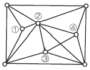
- ①
- ②
- ③
- ④
(정답률: 68%)
87. 그림과 같이 A점에서 D점에 이르는 도중 폭약 300m의 하천이 있어서 P점 및 Q점에 레벨을 설치하여 교호수준측량을 실시하였다. A점으로부터 D점에 이르는 각 측점의 표고차가 다음과 같을 때 D점의 표고는? (단, A점의 표고는 30m이다.)
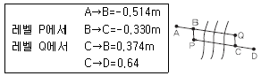
- 29.777m
- 30.481m
- 31.509m
- 32.519m
(정답률: 53%)
88. 측량의 오차에서 최소제곱법의 적용을 위한 가정에 해당되지 않은 것은?
- 조정할 관측값의 수는 충분히 많다.
- 관측값에 우연오차는 남아있다.
- 오차의 빈도분표는 정규분포이다.
- 관측값에는 과대오차 및 정오차가 남아 있다.
(정답률: 53%)
89. 등고선의 성질에 대한 설명으로 옳지 않은 것은?
- 등고선은 절벽이나 동굴 등의 특수한 지형외에는 합치거나 교차하지 않는다.
- 경사가 급할수록 등고선 간격은 넓어진다.
- 등고선은 분수선과 직교한다.
- 경사가 일정한 사면에는 간격이 동일하다.
(정답률: 83%)
90. 전자기파거리측량기는 광파와 전파를 일정파장의 주파수로 변조하여 이 변조파의 왕복위상 변화를 관측하여 거리를 구한다. 전자기파의 속도를 3×108m/sec 주파수를 7.5×106Hz라고 할 때 파장은?
- 25m
- 40m
- 250m
- 400m
(정답률: 54%)
91. 축척 1:25000인 지형도에서 제한 기울기를 4%로 할 때 등고선 주곡선 간의 수평거리는?
- 5㎜
- 10㎜
- 20㎜
- 40㎜
(정답률: 47%)
92. 토털스테이션(T3)을 이용하여 100m에 위치한 측점을 각관측 하였을 때 5″의 관측오차에 발생할 수 있는 측점위치오차는?
- 2.4㎜
- 3.0㎜
- 3.6㎜
- 4.2㎜
(정답률: 44%)
93. 레벨을 조정하기 위하여 그림과 같이 A, B, C, D에 말뚝을 박고 A와 C에 수준척을 세웠다. BC=CD=30m, AB=10m일 때 레벨의 위 치 B에서의 읽음값 (b1=1.262m, b2=1.726m)레벨의 위치 D에서의 읽음값 (d1=1.745m, d2=2.245m)일 때 조정량은?
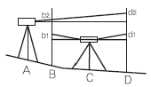
- 0.0002rad
- 0.0004rad
- 0.0006rad
- 0.0008rad
(정답률: 42%)
94. 삼각측량에서 삼각점의 위치 선정에 관한 주의사항으로 옳지 않은 것은?
- 각점이 서로 잘 보여야 한다.
- 될 수 있는 대로 측점 수를 적게 한다.
- 계속해서 연결되는 작업에 편리하여야 한다.
- 삼각형은 될 수 있는대로 직각삼각형으로 구성한다.
(정답률: 79%)
95. 보기의 ( ) 속에 들어갈 용어가 순서대로 올바르게 짝지어진 것은?
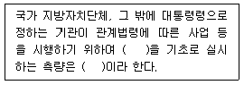
- 기본측량 - 일반측량
- 공공측량 - 기본측량
- 기본측량 - 공공측량
- 일반측량 - 공공측량
(정답률: 58%)
96. 국토해양부장관은 5년마다 측량기본계획을 수립하는데 그에 따른 측량기본계획에 해당되지 않는 것은?
- 측량에 관한 기본 구상 및 추진 전략
- 국가공간정보체계의 활용 및 공간정보의 유통
- 측량의 국내외 환경 분석 및 기술연구
- 측량산업 및 기술인력 육성방안
(정답률: 38%)
97. 공공측량성과 심사수탁기관은 성과심사의 신청을 받은 때에는 특별한 사유가 없는 경우에 접수일로부터 며칠 이내에 심사를 하여야 하는가?
- 7일
- 10일
- 20일
- 30일
(정답률: 55%)
98. 2년 이하의 징역 또는 2천만원 이하의 벌금에 해당하는 경우는?
- 성능검사를 부정하게 한 성능검사 대행자
- 무단으로 측량성과 또는 측량기록을 복제한 자
- 심사를 받지 아니하고 지도 등을 간행하여 판매하거나 배포한 자
- 측량기술자가 아님에도 불구하고 측량을 한 자
(정답률: 48%)
99. 측량업자인 법인이 파산 또는 합병 외의 사유로 해산한 경우에는 법인의 청산인이 사실이 발생한 날부터 최대 며칠 이내에 그 사실을 신고하여야 하는가?
- 10일
- 15일
- 30일
- 60일
(정답률: 65%)
100. 국가공간정보에 관한 법률에 의한 정의로 옳지 않는 것은?
- 공간정보체계란 공간정보를 효율적으로 관리 및 활용하기 위하여 자연적 또는 인공적 객체에 부여하는 공간 정보의 유일식별번호를 말한다.
- 공간정보란 지상·지하·수상·수중 등 공간상에 존재하는 자연적 또는 인공적인 객체에 대한 위치정보 및 이와 관련된 공간적인지 및 의사결정에 필요한 정보를 말한다.
- 공간정보데이터베이스란 공간정보를 체계적으로 정리하여 사용자가 검색하고 활용할 수 있도록 가공한 정보의 집합체를 말한다.
- 국가공간정보체계란 관리기관이 구축 및 관리하는 공간정보세계를 말한다.
(정답률: 71%)